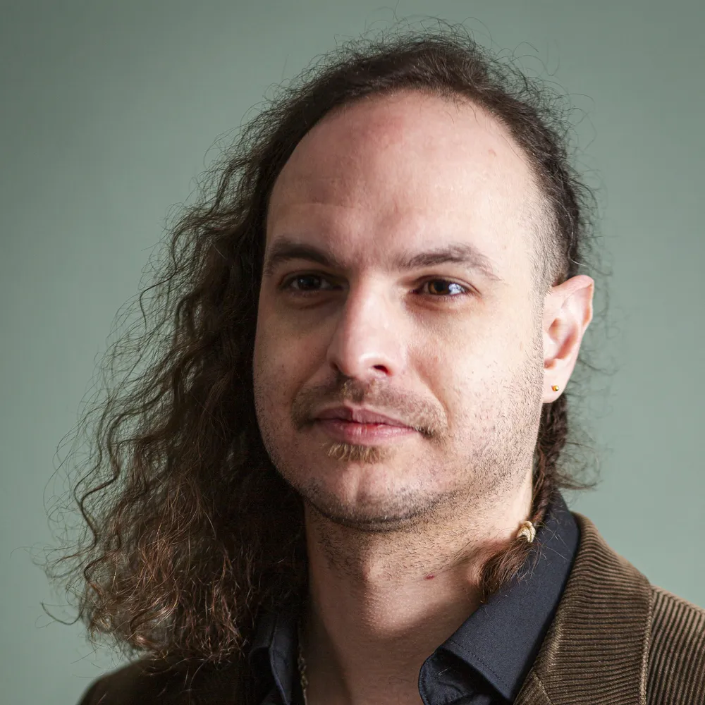

Curriculum Vitae
| Ron Sedee | |
| info@cd-ron.eu | |
| 0681075025 | |
| Schaepmanstraat 16 | |
| 3027CD Rotterdam | |
| 6 augustus 1988 | |
| cd-ron.eu | |
| linkedin.com/in/cd-ron | |
| github.com/CD-R0n |
Diploma's
| 2024 | Front-end Developer | |
| 2016 | Veiligheid voor Operationeel Leidinggevenden VCA | |
| 2015 | Rijbewijs A | |
| 2010 | Technicus middenkader WEI (industriële geautomatiseerde installaties en systemen) | |
| 2008 | Rijbewijs B | |
| 2005 | Basisveiligheid VCA | |
| 2005 | Voorbereidend Middelbaar Beroepsonderwijs, theoretische leerweg |
Vaardigheden
IT Software
| ⦁ | Agile Scrum |
|
| ⦁ | HTML/CSS |
|
| ⦁ | JavaScript |
|
| ⦁ | Git |
|
| ⦁ | Linux |
|
| ⦁ | MySQL |
|
| ⦁ | PHP |
|
Leidinggevend
- Plannen
- Communicatie
- Teamwork
- Stressbestendig
IT Hardware
- Configureren
- Assemblage
- Diagnosticeren
- Repareren
Zelfstandig Ondernemer
- Werkethiek
- Klantgericht
- Georganiseerd
Elektrotechniek
- Programmeren
- Diagnosticeren
- (SMD) Solderen
- Repareren
- Testen
- Assemblage
Geluidstechniek
- Podiumtechniek
- Digitale Mixers
- Mixen / Masteren / Produceren
Fotografie
- Fotograferen
- Nabewerken
Talen
| Nederlands | Moedertaal | |
| Engels | Vloeiend |
Hobby's
Computertechniek
- Servers:
- Cloudservices
- Webserver
- Bitcoin node
- Media streaming
- Web3 / Blockchain
- Android custom ROMs
Muziek
- Bassist
- Muziekproductie
Reizen en Culturen
- Werkprojecten in het buitenland
- Motortochten door Europa
Motor
- Touren
- Onderhoud
Profiel
Van jongs af aan ben ik gefascineerd door de werking van elektronica en computers.
Ik werk graag gestructureerd en overzichtelijk,
en vind het belangrijk om echt onderdeel te zijn van de organisatie waar ik werk.
Samenwerken met anderen geeft me energie,
en ik voel me het meest op mijn plek in een omgeving waar menselijk contact en teamwork centraal staan.
Ik hecht veel waarde aan verantwoordelijkheid en betrokkenheid binnen een team.
Daarnaast werk ik bewust aan mijn zelfvertrouwen in groepssituaties, omdat ik mezelf continu wil blijven ontwikkelen — zowel professioneel als persoonlijk.
Kernkwaliteiten: Analytisch • Verantwoordelijk • Nauwkeurig • Leergierig • Zelfstandig
Werkervaring
Coördinator Podiumtechniek / Planner
Stadstheater Zoetermeer (referentiebrief op te vragen)
oktober 2024 - september 2025
- Technische realisatie van twee voorstellingen per dag:
- Opstellen van technische lijsten en draaiboeken aan de hand van contacten met de bespelers
- Werkvoorbereiding (inhuur van apparatuur en oproepkrachten etc.)
- Opstellen van roosters voor de technici conform de arbeidswet en CAO
- Functie in verwaarloosde staat gestructureerd en waar mogelijk geautomatiseerd:
- Deadlines omtrent de planning opgesteld, gedocumenteerd en gehanteerd
- Evenementensysteem gekoppeld aan excel-sheet voor overzicht wat wel/niet geregeld is
- Allround podiumtechnicus
Koerier
Picnic, Zoetermeer
juli 2024 - september 2024
Tientallen mensen per dag blij gemaakt met het op tijd leveren van hun boodschappen
Zelfstandig Ondernemer
CD-RON
juli 2019 - september 2024
Film en Theater:
Licht- en geluidstechnicus, Toneelmeester
Podcasts:
Opnemen en afmixen / Video / Live Streaming
Muziek:
Bassist / Productie / Geluidstechniek
Airbnb:
Host
Leidinggevende Elektronica-Afdeling
Pipesurvey International, Zwijndrecht
januari 2015 - juni 2019
- Assemblage van geavanceerde pigging elektronica en fijn-mechanica
- Elektronica potting specialist
- Voorraadbeheer
- Ontwikkelen van testmethodes en tools
- Buitenland: tool operator in Mexico, Thailand en China
Test- en Assemblagemedewerker
Praxis Automation Technologies, Leiderdorp
september 2014 - december 2015
Assemblage en testen van industriële scheepvaart elektronica en PLC's. Onder andere:
- Communicatiesystemen
- (Brand)Alarmsystemen
- Motoraansturing
- Navigatiesystemen
- Radarsystemen
Test Engineer
Technolution, Gouda
september 2013 - maart 2014
Geholpen met de verhuizing door vaste hightech testinstallaties mobiel te maken door middel van
ontwerpen van- en monteren op verrijdbare karren.
Assisteren bij de ontwikkeling van nieuwe elektronica door middel van bestellen en assembleren
van
componenten
Elektronica Reparatiemedewerker
Carrier Transicold, Rotterdam
december 2011 - juni 2013
Storing zoeken en repareren van reefer container-elektronica
Stage-ervaring
Consumentenelektronica Reparatiemedewerker
X-Alt Systems, Zoetermeer
augustus 2009 - december 2009
Storing zoeken en repareren van Apple producten
Afstudeeropdracht
Praxis Automation, Leiden
december 2008 - maart 2009
Aansturing van een goederenlift volledig gerealiseerd:
- Technische tekeningen gemaakt
- Onderdelen besteld
- PLC geprogrammeerd
- Bedieningskastjes gebouwd
- Volledig bedraad
Test- en Assemblagemedewerker
Praxis Automation, Leiden
juli 2008 - augustus 2008
Assemblage en testen van industriële scheepvaart elektronica en PLC's. Onder andere:
- Communicatiesystemen
- (Brand)Alarmsystemen
- Motoraansturing
- Navigatiesystemen
- Radarsystemen
PC Reparatiemedewerker
Ascob hard- & software, Zoetermeer
september 2007 - december 2007
Storing zoeken, repareren, samenstellen en assembleren van consumentencomputers
Elektronica Assemblagemedewerker
HEAD Electronics, Katwijk
september 2006 - december 2006
Assemblage van industriële elektronica